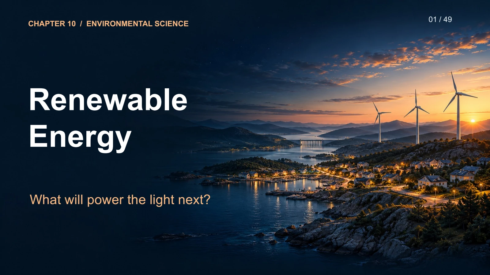

Static slide preview · Download PowerPoint for embedded animations. Speaker notes are not included. Use arrow keys to navigate and F for fullscreen.
JavaScript is needed for slide navigation. Read the complete lesson or download Chapter_10.pptx.